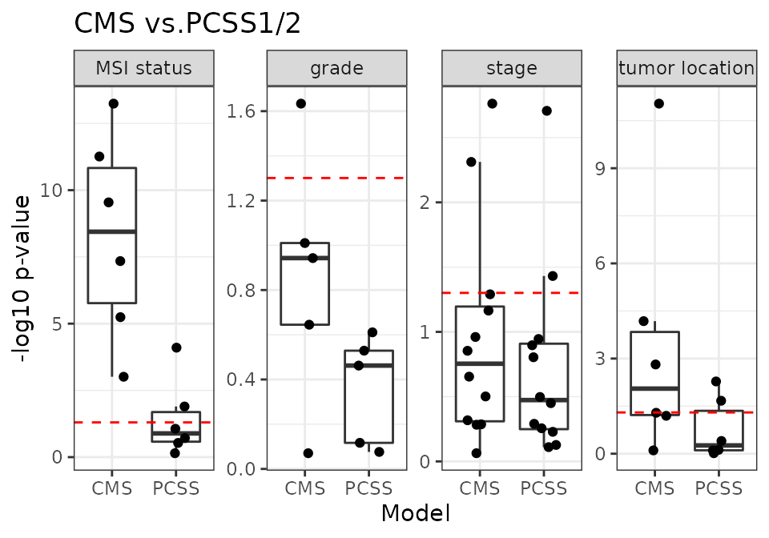
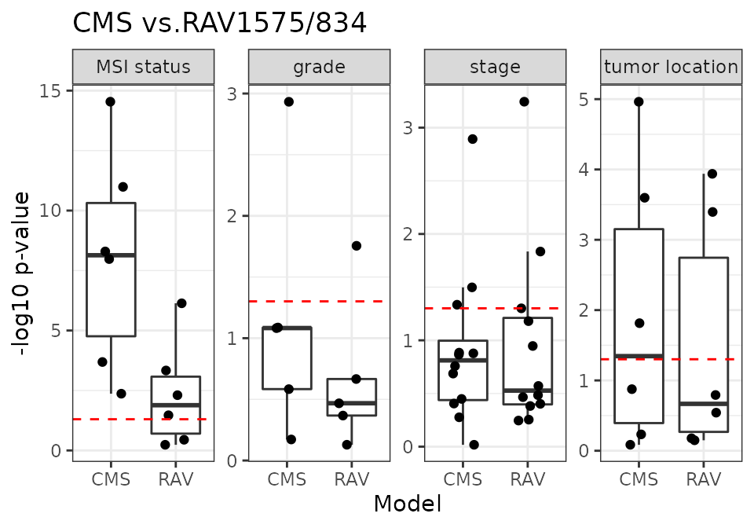
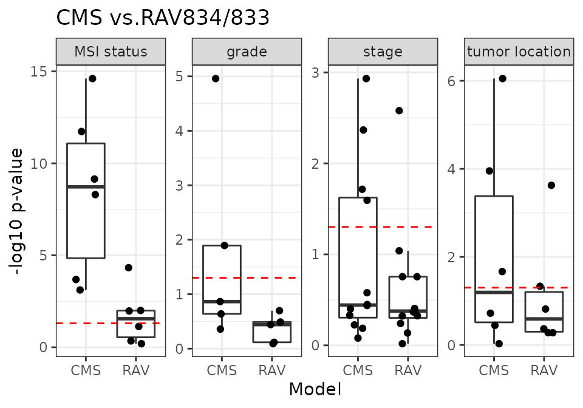
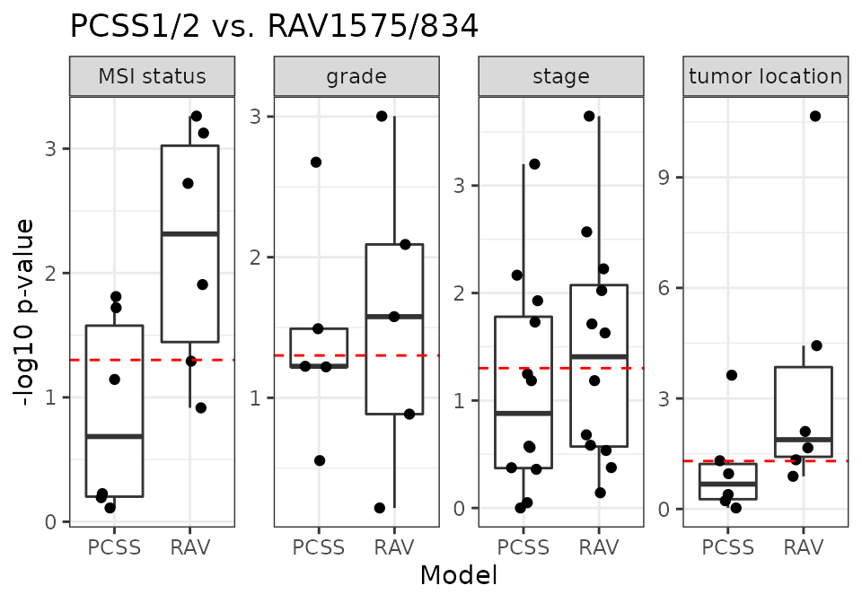
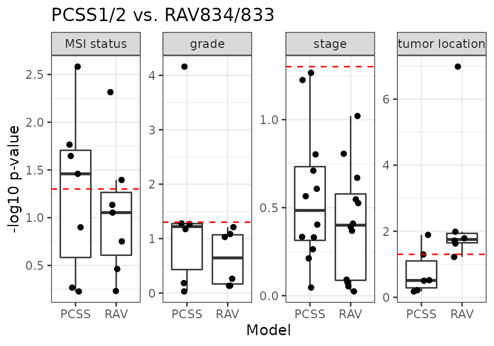
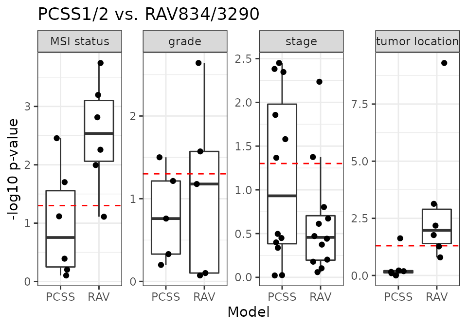
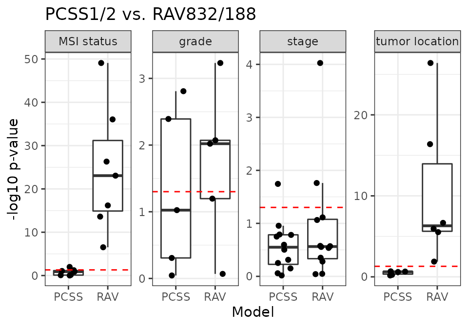

vignettes/CRC/repeat_Fig4C.Rmd
repeat_Fig4C.RmdFig4C_CMSvs.R and Fig4C_contScores.R scripts are using only 10 validation datasets. If you want to use all 18 datasets, block the line 11-13 of those scripts.## line 11-13 # load("data/eSets/trainingSetNames.RData") # validationSetNames <- setdiff(setNames, trainingSetNames) # setNames <- validationSetNames
Fig4C_CMSvs.R script requires three environmental variables set before running: m2_name (column name for the model to be compared to CMS), m2_1 and m2_2 (names of the two model variables that form the group to be compared to CMS)
Fig4C_contScores.R script requires six environmental variables set before running: m1_name, m1_1, m1_2 for one model, m2_name, m2_1, m2_2 for the other.
m2_name <- "PCSS" m2_1 <- "PCSS1" m2_2 <- "PCSS2" source("R/Fig4C_CMSvs.R", print.eval = TRUE) ## Warning: Removed 46 rows containing non-finite values (stat_boxplot). ## Warning: Removed 46 rows containing missing values (geom_point).

RAV1575/834 are the most similar PCclsuters to PCSS1/2, respectively, based on Pearson correlation.
m2_name <- "RAV" m2_1 <- "RAV1575" m2_2 <- "RAV834" source("R/Fig4C_CMSvs.R", print.eval = TRUE) ## Warning: Removed 46 rows containing non-finite values (stat_boxplot). ## Warning: Removed 46 rows containing missing values (geom_point).

RAV834/833 have the largest r-squared score when we compared the samples scores against the metadata, CMS.
m2_name <- "RAV" m2_1 <- "RAV834" m2_2 <- "RAV833" source("R/Fig4C_CMSvs.R", print.eval = TRUE) ## Warning: Removed 46 rows containing non-finite values (stat_boxplot). ## Warning: Removed 46 rows containing missing values (geom_point).

m1_name <- "PCSS" m1_1 <- "PCSS1" m1_2 <- "PCSS2" m2_name <- "RAV" m2_1 <- "RAV1575" m2_2 <- "RAV834" source("R/Fig4C_contScores.R", print.eval = TRUE) ## Warning: Removed 46 rows containing non-finite values (stat_boxplot). ## Warning: Removed 46 rows containing missing values (geom_point).

m1_name <- "PCSS" m1_1 <- "PCSS1" m1_2 <- "PCSS2" m2_name <- "RAV" m2_1 <- "RAV834" m2_2 <- "RAV833" source("R/Fig4C_contScores.R", print.eval = TRUE) ## Warning: Removed 44 rows containing non-finite values (stat_boxplot). ## Warning: Removed 44 rows containing missing values (geom_point).

RAV3290 is associated with “stage” metadata of CRC datasets.
m1_name <- "PCSS" m1_1 <- "PCSS1" m1_2 <- "PCSS2" m2_name <- "RAV" m2_1 <- "RAV834" m2_2 <- "RAV3290" source("R/Fig4C_contScores.R", print.eval = TRUE) ## Warning: Removed 46 rows containing non-finite values (stat_boxplot). ## Warning: Removed 46 rows containing missing values (geom_point).

RAV596 is associated with “grade” metadata of CRC datasets.
m1_name <- "PCSS" m1_1 <- "PCSS1" m1_2 <- "PCSS2" m2_name <- "RAV" m2_1 <- "RAV834" m2_2 <- "RAV596" source("R/Fig4C_contScores.R", print.eval = TRUE) ## Warning: Removed 44 rows containing non-finite values (stat_boxplot). ## Warning: Removed 44 rows containing missing values (geom_point).
